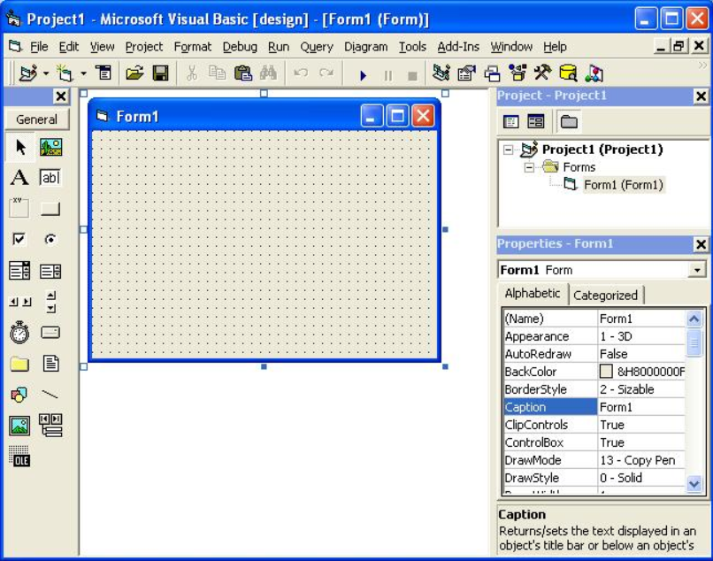
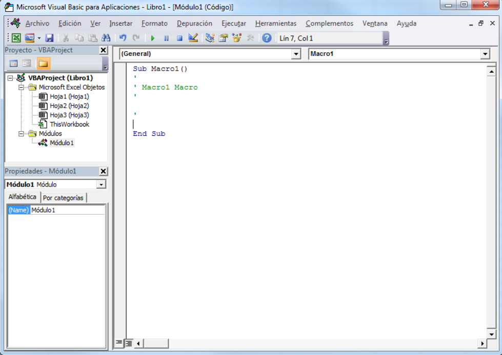

El IDE de Visual Basic 6 tenía una serie de características que se han mantenido en otros lenguajes de programación, como C# o Visual C++. Entre ellas son:
Pero la característica principal de visual Basic es que toda la programación está orientada a eventos.
El tema es que los controles comentados antes y los formularios vienen asociados a una serie de eventos, que es cuando ocurre algo concreto, ya sea por una acción del usuario o del sistema operativo.
Por poner un ejemplo sencillo, un botón tiene un evento click, y dentro de ese evento programaremos lo que nos interesa (por poner otro ejemplo snecillo, que salga un mensaje).
Otro evento sería en un textbox cuando hacemos click o tabulamos y recibe el foco (llamado GotFocus).
Así tenemos una lista de eventos relacionados, algunos comunes y otros específicos de cada control.
Vamos a ver las grandes ventajas que tiene visual basic, y los inconvenientes que hicieron que no evolucionase tal y como lo conocemos hoy en día:
Ahora algunas de sus desventajas:
En 2002 se publicó por primera vez Visual Studio .NET, intentando corregir las desventajas comentadas que los lenguajes de programación de Visual Studio tenían.
Ahora todo está bajo un Framework (actualmente viene con el sistema operativo): un conjunto bibliotecas y funciones que facilitan las tareas del programador, ganando en fiabilidad con el tratamiento de muchos tipos de datos y haciendo la programación orientada a objetos, en parte, cómo base para utilizar.
En 2010 Microsoft lanzó una versión gratuita llamada Visual Basic 2010 Express, con algunas limitaciones, haciendo que ya no se tuviera que pagar para poder crear distintos tipos de programa.
Otra aplicación es la creación de páginas web mediante ASPX.
Aunque antes ya se podía hacer alguna página, no es hasta que se creó la versión .NET que los procedimientos mejoraron muchos, sobretodo en su ejecución, haciendo que este producto vuelva a utilizarse como antes, aunque sea con otro lenguaje como C#.
Aunque ahora visual basic ha quedado en un segundo plano, gracias a la popularidad de C#, otra forma de utilizar su sintaxis es en las macros de Office (también te lo puedes encontrar con el nombre de VBA).
En los productos del paquete (Access, Word, Excel, etc.) es posible crear macros para tratar la información (ya sea mediante variables o accediendo directamente a los archivos abiertos de Office) de una manera muy avanzada.
Lo más popular es Visual Basic Excel: la interfaz para programar un archivo Excel es idéntica a la de visual basic 6, aunque la formar en que el programador hace el desarrollo de los datos es diferente.
Pero si ya has escrito código, o has visto algunos ejemplos, es muy fácil crear tus propias macros.
Existen muchas webs de referencia de este lenguaje, pero la que ha sido más útil durante años es la web del Guille.
En ella encontrarás muchos ejemplos, y una gran cantidad de tutoriales para aprender paso a paso, tanto la versión 6.0 como la .NET.
También en Planet Source Code encontrarás proyectos y algún tutorial con código fuente para descargar, y saber cómo utilizar algún tema en concreto: desde creación y de documentos, uso de base de datos, interacción con otras aplicaciones y cualquier de las muchas opciones que se te pueda ocurrir, ya que la documentación es muy extensa.
Para buscar un curso de visual basic, deberías de buscar sobre la última versión llamada Visual Basic .NET, aunque creo que encontrarás mucho más sobre C#.
También te puede interesar un curso sobre macros de Excel, el llamado VBA, ya que existe una demanda creciente sobre este tipo de programación.
Aunque ahora ya no se oye hablar tanto de visual basic, todavía se puede aprender este lenguaje para windows y aprovechar sus funciones, sobretodo con VBA.